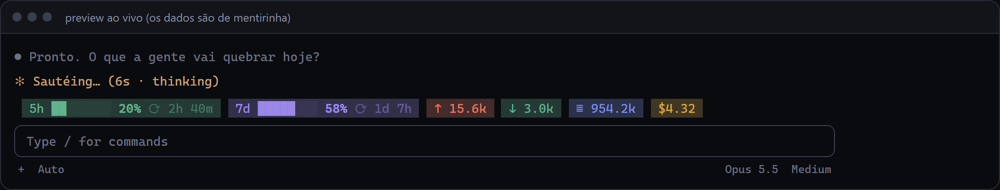
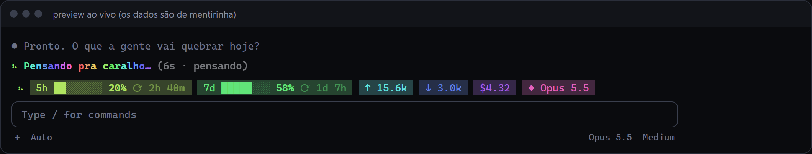
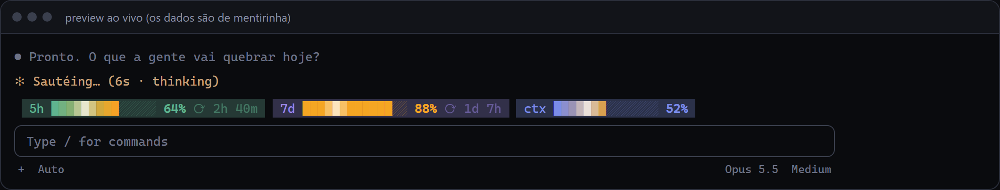
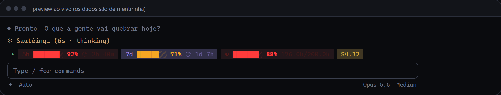
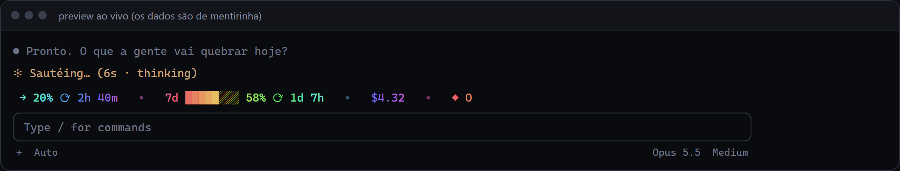
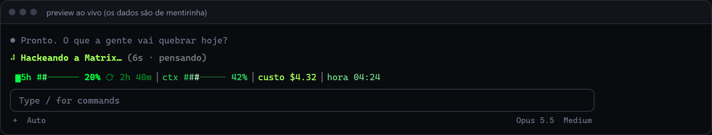
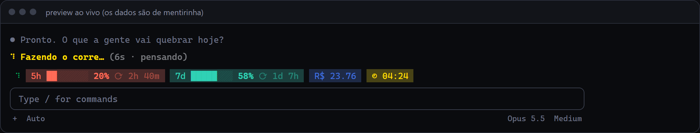
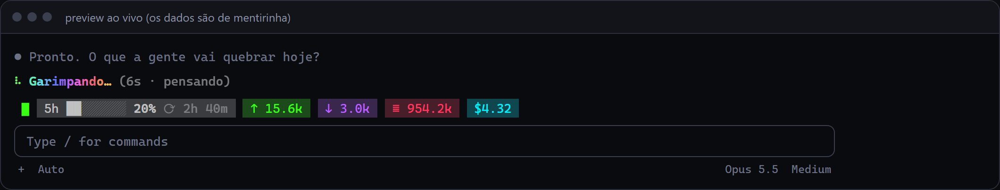
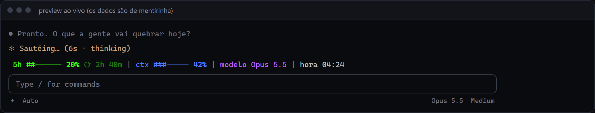
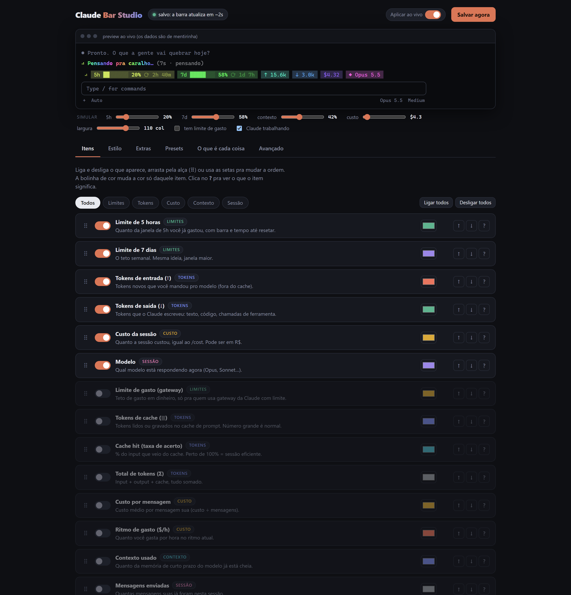

Limites 5h/7d, tokens e custo direto acima do prompt. Animações, spinner em português, alertas e um painel visual pra ligar e desligar o que você quiser.
Showreel de 15s (tem trilha: clica no som). As telas são do preview do painel, com dados simulados.
Tudo configurável no painel, sem editar arquivo na mão. Salvou, o Claude muda em ~2 segundos.
Limite de 5h e 7d com barra e tempo até resetar, tokens de entrada/saída/cache, cache hit, custo (em US$ ou R$), contexto, modelo, relógio e mais.
Arco-íris, respirar, brilho nas barras, pulsar no alerta, disco e letreiro rolando. Mais um símbolo que gira enquanto o Claude trabalha.
Troca o "Sautéing…" por suas palavras ("Cozinhando", "Pensando pra caralho"), que rodam sozinhas e podem ficar em arco-íris.
Minimalista, Dev focado, Monitor de grana, Matrix, Brasil, Streamer, Alerta vivo… um clique aplica itens, cores, animação e extras.
Aviso na tela quando 5h, 7d ou contexto passam de um nível, quando o custo estoura ou quando um turno demora demais.
O painel tem um glossário: o que é cada item, de onde vem o número e o que significam token, cache e janela de 5h.
Recortes do preview do painel (dados simulados). Clica pra ampliar.









Dois minutos de mexida resumidos em 15 segundos: preset, animação, spinner e alerta.
Roda local no seu computador (Node, sem dependências). Liga itens, arrasta pra reordenar, escolhe cores e vê o resultado ao vivo.

Precisa do Claude Code com suporte a mods (acesso antecipado; testado na 2.1.286) e Node 18+ pro painel.
Clona o repositório.
git clone https://github.com/touchzada/claude-bar-studio.git cd claude-bar-studio
Abre o Claude Code apontando pra pasta do mod.
claude --plugin-dir ./mod/usage-band
Em outro terminal. Abre sozinho em 127.0.0.1:4747.
node panel/server.js
Escolhe um preset ou liga item por item. O painel salva ~/.claude/usage-band.json e o mod redesenha em ~2s.
/cost). Em assinatura não é cobrança extra.